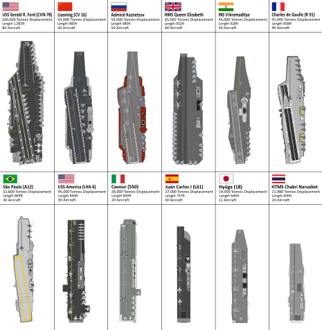
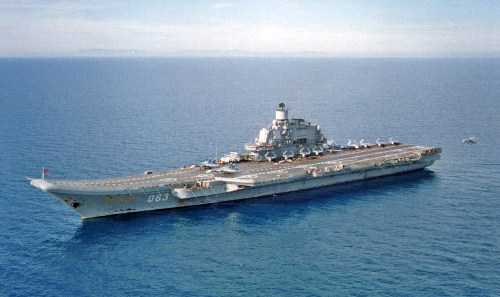

Letadlové lodě- 1
Velikost- 133 000 osob 260 lodí přes 256 letadel přes 60 ponorek
K červnu 2009 mělo ruské námořnictvo k dispozici cca 60 ponorek, přibližně 70 velkých hladinových bojových lodí (křižníky, torpédoborce, fregat a korvet), t�m�� 80 pobřežních a hlídkových člunů, cca 40 minolovek, zhruba 70 obojživelných výsadkových lodí a vznášedel a 370 logistických a podpůrných lodí. Značná část těchto lodí je však již zastaralá či neschopná služby, p�i�em� pro ně není náhrady. Plány rozvoje a modernizace námořnictva se nyní soustřeďuje zejména na ponorky. V ostatních kategoriích hrozí, že se ruské námořnictvo stane spíše pobřežní silou. Složky ruského vojenského námořnictva jsou organizovány do Severního loďstva, Baltského loďstva, černomořského loďstva a Tichomořského loďstva, Kaspického loďstva, Ruské námořní letectvo a pobřežní síly (zahrnující Námořní pěchotu a pobřežní baterie). Symbolika současného ruského námořnictva navazuje na tradice ruského carského námořnictva. Odpovídají ji standarty, uniformy i názvy lodí. Ze sovětské éry tak zůstaly zejména pěticípé hvězdy na ruských letadlech. Vlajku moderního ruského námořnictva tvoří modré kolo v bílém poli.


lodě:
Korveta je rychlá, obratná a malá válečná loď s relativní silnou výzbrojí, která je obvykle dlouhá 50 až 95 metrů a má výtlak v rozmezí od 500 do 2 000 tun. Ačkoliv je hlavním úkolem většiny korvet boj s hladinovými plavidly protivníka, mají na rozdíl od raketových člunů k dispozici také protivzdušnou a protiponorkovou výzbroj. Moderní korvety taky často disponují přistávací plochou pro vrtulník.-
Korvet -79
Křižník je velká válečná loď schopná současně monitorovat a útočit na více různých cílů. Historicky jsou křižníky považovány za nejmenší lodě schopné provádět nezávislé vojenské operace.
Křižníky-5
Torpédoborec je rychlá a obratná válečná loď se silnou raketovou, hlavňovou a torpédovou výzbrojí, určená k plnění mnoha různorodých úkolů. Jeho hlavním úkolem je vedení boje s letadly, ponorkami a hladinovými loďmi protivníka na otevřeném moři. Slouží též jako doprovod velkých lodí ve flotile nebo bojových skupinách.
Torpédoborec-12
Současná fregata sdílí se svou předchůdkyní pouze označení. V moderním vojenském názvosloví je fregata malá, všestranná a spolehlivá loď. Je zpravidla mnohem menší než torpédoborec a jejím hlavním úkolem je boj s ponorkami a doprovod konvojů či obojživelných výsadkových svazů. V některých námořních silách (například. Nizozemské královské námořnictvo či Německé námořnictvo) se jako fregata označují jednotky větší (např. třída De Zeven Provincien či třída Sachsen), které by jinak svými parametry patřily mezi torpédoborce. Důvodem je zejména politicky motivovaná snaha o zdůraznění obranného charakteru dané námořní síly, neboť fregaty jsou na rozdíl od torpédoborců tradičně vnímány jako jednotky obranné.